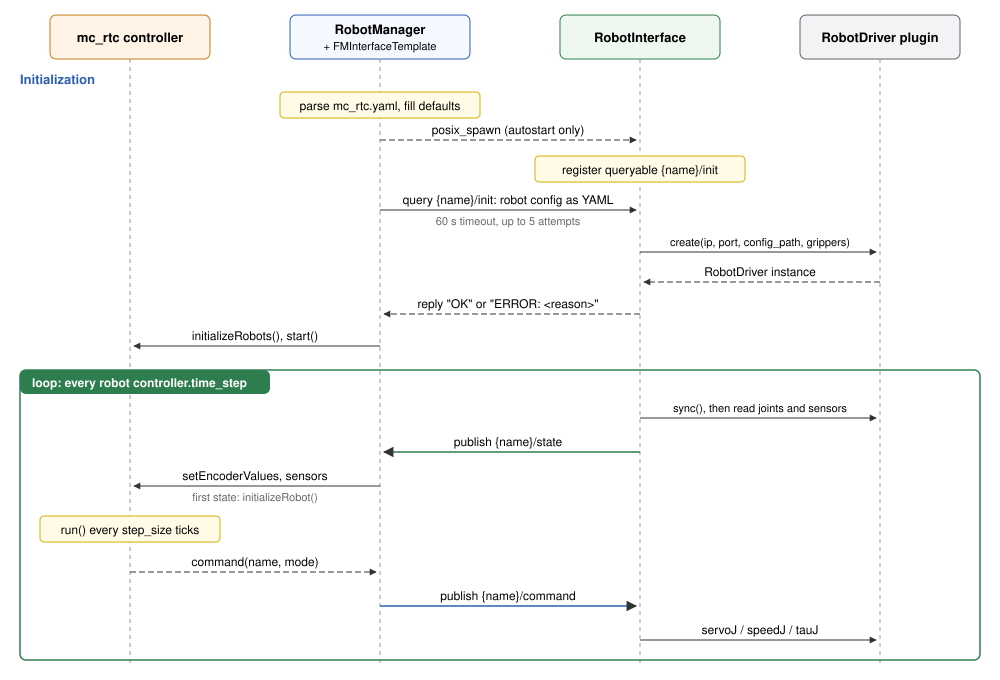

Robot manager (uri manager)
uri manager is the process that runs mc_rtc. At startup it reads a standard
mc_rtc.yaml extended with a Robots: section and sets up one manager-side
proxy per robot. It then handshakes with every robot's interface process (uri interface).
Finally, it runs the real-time loop that moves state into mc_rtc and commands
out of it.
uri manager -c /path/to/mc_rtc.yaml
| Option / variable | Meaning |
|---|---|
-c, --config <file> |
mc_rtc configuration, required |
MC_RT_FREQ=<ms> |
Period of the SCHED_DEADLINE reservation for the main thread, in milliseconds (default 1) |
Code map
| Class | File | Role |
|---|---|---|
robot_manager::RobotManager |
robot_manager/src/robot_manager/RobotManager.cpp |
Config processing, autostart, init handshake, main loop |
robot_manager::RobotInterfaceBase |
robot_manager/include/robot_interface/RobotInterfaceBase.h |
Abstract manager-side proxy of one robot (updateSensors, updateControl) |
robot_manager::FMInterfaceTemplate |
robot_manager/src/robot_interface/FMInterfaceTemplate.cpp |
Default proxy: forwards State to mc_rtc and mc_rtc's output as Command |
robot_manager::RobotInterfaceFactory |
robot_manager/src/robot_interface/RobotInterfaceFactory.cpp |
Picks the proxy implementation from the robot's interface: key |
robot_controller::Controller |
robot_controller/include/robot_controller/Controller.h |
Abstract controller backend; ControllerMcRtc wraps MCGlobalController |
Configuration reference
uri takes a normal mc_rtc configuration: MainRobot, Enabled,
Timestep, observers and so on still mean what they do in mc_rtc. On top of
that, it reads the keys below.
MainRobot: UR5e
Enabled: Posture
Timestep: 0.005 # mc_rtc period, shared by all robots
Controller: mc_rtc # [optional] controller backend, default mc_rtc
Robots:
ur5e: # robot name = topic prefix
module: UR5e # mc_rtc RobotModule name
interface: interface_template # [optional] manager-side proxy
base: other_robot # [optional] inherit another entry
controller:
mode: position # position | velocity | torque
time_step: 0.001 # [optional] robot interface period [s], default Timestep
network_interface: # see Communication
protocol: zenoh
robot_interface: # forwarded to the uri interface
driver: RobotDriverRTDE # plugin class name
ip: 192.168.1.6
port: 0
config_path: /path/to/driver.yaml # [optional] driver-specific file
autostart: false # [optional] spawn uri interface locally
Robots.<name> keys
| Key | Required | Default | Meaning |
|---|---|---|---|
module |
yes | none | mc_rtc RobotModule. It also provides the gripper list sent to the driver. |
interface |
no | interface_template |
Manager-side proxy implementation (RobotInterfaceFactory) |
base |
no | none | Copy another robot's entry, then apply this entry's keys on top |
controller.mode |
no | position |
Command type sent to the robot |
controller.time_step |
no | Timestep |
Robot interface control period in seconds. Can differ between robots. |
network_interface.protocol |
no | zenoh/shm |
See Communication |
robot_interface.driver |
yes | none | Driver plugin class, e.g. RobotDriverRTDE |
robot_interface.ip |
yes | none | Passed to the driver's create(). Required even for drivers that ignore it. |
robot_interface.port |
yes | none | Same as ip |
robot_interface.config_path |
no | "" |
Passed to the driver's create() for driver-specific settings |
robot_interface.autostart |
no | false |
uri manager spawns and stops the robot's uri interface itself |
Timing rules
For every robot, uri checks the timing at startup and refuses to start if a
rule is broken:
Timestep≥controller.time_step: mc_rtc cannot run faster than the robot.Timestepis an exact multiple ofcontroller.time_step.
The main loop ticks at the robot period and calls mc_rtc's run() every
Timestep / time_step ticks. For example, Timestep: 0.005 with
time_step: 0.001 gives a 1 kHz loop and mc_rtc at 200 Hz. Between mc_rtc
runs, the last command is sent again.
The main loop period is taken from the first robot. With several robots, give them the same
time_step.
Startup sequence

- Config processing (
processGConfig) fills in the few defaults, resolvesbase:, validates required keys and picks the protocol. - Controller:
ControllerLoaderloads the backend named byController:from<libdir>/robot_controller/librobot_controller_<backend>.so. - Per robot (
init):- Start a local Zenoh router if any robot uses Zenoh.
- Read the grippers from the RobotModule and add them to the robot's
config as
grippers: {name: [joints]}. - With
autostart: true, write/tmp/robot_manager_<name>_interface.yamlandposix_spawnuri interface -c <that file> -n <name>, using the sameuriexecutable as the manager (/proc/self/exe), orurionPATHas a fallback. The exact command is printed, so it can be rerun by hand withautostart: false. - Create the proxy (
FMInterfaceTemplate) with arobot_commserver.
- Init handshake: for each robot, send the robot's whole config on
{name}/initand wait up to 60 s per attempt, retrying up to 5 times. Robots that time out or replyERROR: ...are dropped with an error message, and the others continue. If no robot answers,uristops. - Timing checks (above), then
initializeRobots()andstart()on the controller. - Main loop (
mainThread), every robot period:updateSensors()on every proxy. The firstStatereceived from a robot initializes the mc_rtc robot at its real joint positions.- Once every robot has been initialized, call
controller.run()everystep_sizeticks. Until then, no command is computed, so the robot never jumps toward a default posture. updateControl()on every proxy publishes aCommandin the robot'scontroller.mode.
On Ctrl+C, the controller stops, the threads are joined and spawned
uri interface processes receive SIGTERM, then SIGKILL after 5 s.
Controller backend
uri talks to mc_rtc only through robot_controller::Controller, loaded as a
plugin, so another control framework could be plugged in. A backend is a
shared library named librobot_controller_<name>.so, installed in
<libdir>/robot_controller/. It exports three C symbols:
extern "C" {
const char * robot_controller_backend_name(); // must return "<name>"
robot_controller::Controller * robot_controller_create(const char * config_yaml);
void robot_controller_destroy(robot_controller::Controller *);
}
Select it with Controller: <name> in mc_rtc.yaml. See
robot_controller/src/mc_rtc/ControllerMcRtc.cpp for the reference
implementation.
Custom manager-side proxy
FMInterfaceTemplate covers the standard case: joint state and sensors in,
one command type out. If a robot needs different manager-side behavior, such
as a different data mapping or extra logic before commands are sent,
subclass robot_manager::RobotInterfaceBase:
class MyInterface : public robot_manager::RobotInterfaceBase
{
public:
MyInterface(const std::string & name, const mc_rtc::Configuration & config, uint8_t buffer_size)
: RobotInterfaceBase(name, config, buffer_size)
{
auto comm = robot_comm::CommunicationFactory::makeCommunication(name, config("network_interface"));
comm->setupServer();
setCommunication(std::move(comm));
}
void init() override {}
void reset() override {}
void stop() override {}
void updateSensors(robot_controller::Controller & gc) override { /* receive State, gc.setEncoderValues(...) */ }
void updateControl(robot_controller::Controller & gc) override { /* gc.command(...), send Command */ }
bool isInitialized() const override { /* true once gc.initializeRobot() was called */ }
};
Then register it under a new name in RobotInterfaceFactory::makeInterface,
and select it with interface: <name> on the robot.
Troubleshooting
Segmentation fault on Ctrl-C with CycloneDDS
Symptom: uri manager shuts down normally, then crashes:
^C[warning] Caught signal 2
RobotManager shutdown complete.
[info] [ZenohTransport] Stopped
segmentation fault (core dumped) uri manager --config ...
The crash does not happen under gdb. It goes away when RMW_IMPLEMENTATION
is unset.
Cause: mc_rtc's ROS support loads the ROS middleware named by
RMW_IMPLEMENTATION. ROS Humble's rmw_cyclonedds_cpp is built against the
CycloneDDS shipped with ROS (0.10.5, in /opt/ros/humble/lib/x86_64-linux-gnu).
If another CycloneDDS is installed system-wide (for example 0.10.2 in
/usr/local/lib, installed by the Unitree SDK), uri may load that one
instead. The two versions are not ABI compatible, and the process crashes when
DDS is torn down at exit.
LD_LIBRARY_PATH does not help. uri has the cap_sys_nice file capability
(see Getting started), so the dynamic loader ignores
LD_LIBRARY_PATH and takes libraries from ld.so.cache, where /usr/local/lib
comes first. gdb drops the capability, so under gdb the library path is
resolved differently. That is why the crash does not show up there.
To check which CycloneDDS is loaded, look at the maps of a running manager:
grep ddsc /proc/$(pgrep -f "uri manager")/maps
Fixes, from simplest to cleanest:
- Use Fast DDS for the manager: unset
RMW_IMPLEMENTATION, or set it tormw_fastrtps_cpp. - Take the other CycloneDDS out of the system-wide path. For example, move
/usr/local/lib/libddsc*and/usr/local/lib/libddscxx*to a private prefix, runsudo ldconfig, and point the software that needs them there with RPATH orLD_LIBRARY_PATH.ldconfig -p | grep libddsclists every copy the loader can find.
Known limitations
- The Zenoh router config path in
RobotManager::launchZenohRouter()is hard-coded. Adjust it for your machine. - The robot proxy's
controlThread()is currently a no-op. All robots are served by the single main loop. - Init waits a fixed 500 ms after spawning before querying. The retry loop covers slower starts.


Copyright © CNRS-AIST JRL 2026